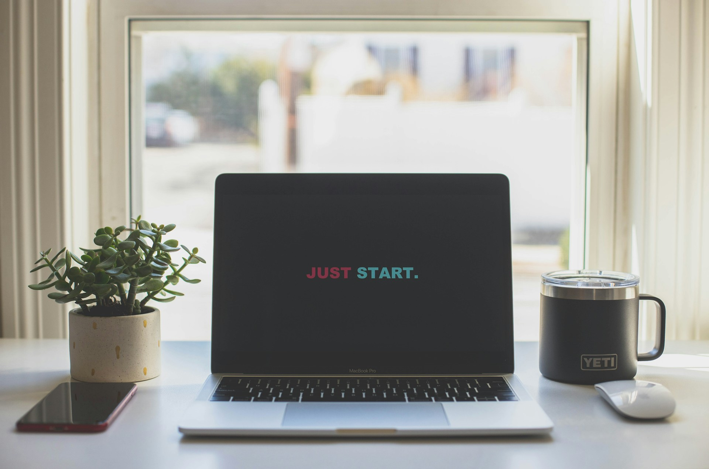

Фритрек и нулевой спринт: Подготовка к работе

Это было самое начало пути. На этом этапе важно было проникнуться основами и настроиться на учёбу. И, возможно, подумать, как новые знания могут повлиять на ваше будущее.
Когда я только начал обучение, у меня уже была база из смежных областей, и основы вёрстки тоже были знакомы. Поэтому старт был не с нуля, но всё равно потребовал включённости и дисциплины. На старте мне было важно собрать разрозненные знания в цельную систему и лучше применять их в проектных работах, понимая, что впереди их будет много. В какой-то момент стало ясно: прежний опыт помогает, но настоящий рост начинается там, где выходишь за рамки привычного.